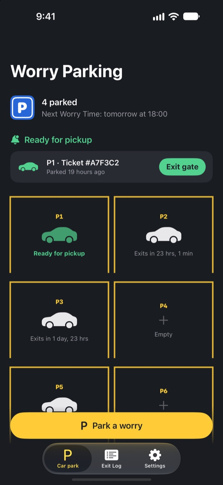
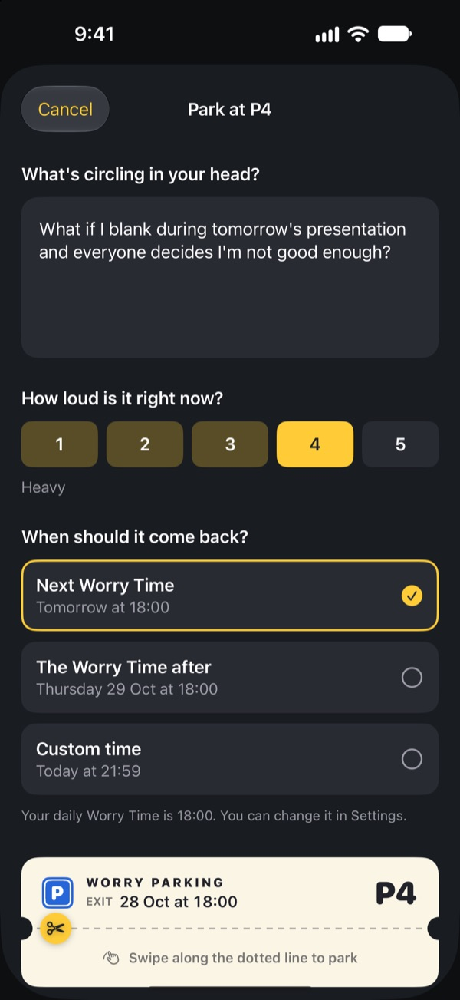
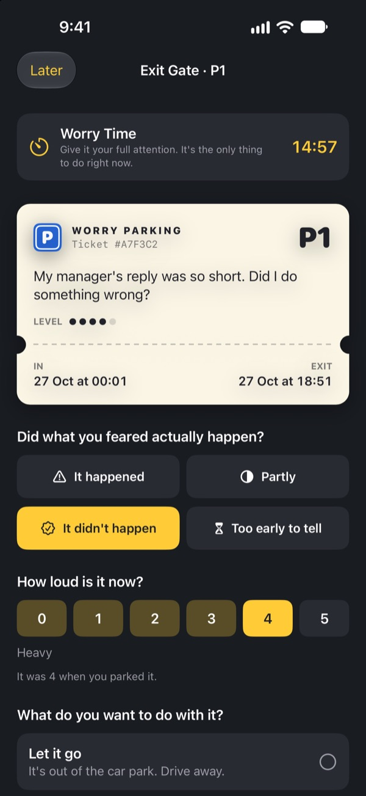
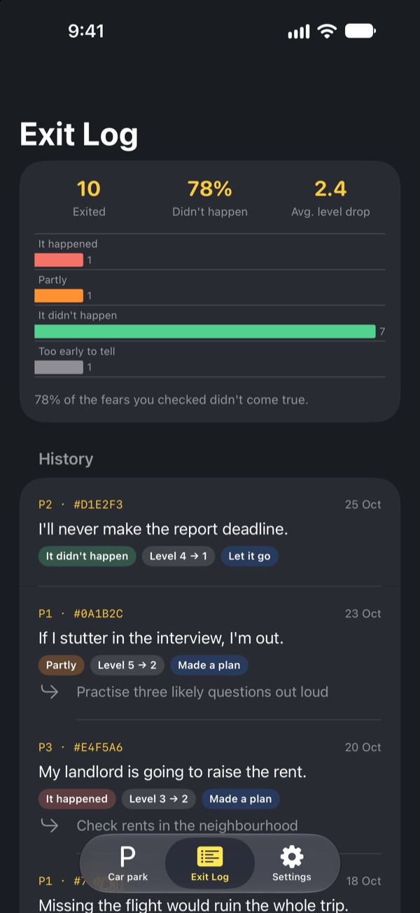

Park the worry.
Get it back later.
Write down whatever keeps circling at bedtime and leave it on a parking ticket. We'll bring it back at your Worry Time. Until then, you don't have to carry it.
Every feature is free. No ads, no account.

Park one worry
Keep the example or type what's on your mind right now. Once it's parked it blurs out, and you take it back out at Worry Time.
Lights off, worries on?
The moment your head hits the pillow, it starts: something you said today, tomorrow's meeting, the message that still hasn't been answered. Telling yourself to stop thinking only makes it louder. Worry Parking doesn't ask you to push it away. You write it down, give it a space, and set aside a time to deal with it.
Write it down, and it gets out of your head
Write it exactly the way it sounds in your head, then rate how loud it is from 1 to 5. Tear off the ticket and the worry stays in the car park, blurred out.
If it drives back into your head, tell it: you already have a space. There's a time for it, and it isn't now.

Face it for 15 minutes at Worry Time
Every day at your Worry Time, you get a reminder. At the Exit Gate you read the worry again, check whether it actually happened, and see how loud it is now.
Then let it go, turn it into one small next step, or park it again until the next Worry Time.

See how often your worries came true
As reviewed worries add up, the Exit Log shows what share actually happened and how much their level dropped.
Worry tends to predict the future as worse than it turns out. The more you log, the less you believe the next one.

Three steps to start
- 1
Pick your Worry Time
The first time you open it, choose when you'll face your worries each day. You can change it later in Settings.
- 2
Park one real worry
Park something on your mind right away and notice how its level changes before and after.
- 3
Allow pickup reminders
At Worry Time you get a reminder with just the space number.
Why it works
- Worry at one set time
- People who moved their worrying to a short daily worry period spent less time worrying and reported less anxiety and fewer sleep problems. (Borkovec et al., 1983; McGowan & Behar, 2013)
- Write it down to put it down
- Making a concrete plan stopped unfinished tasks from intruding on people's thoughts, and five minutes of writing before bed helped people fall asleep faster. (Masicampo & Baumeister, 2011; Scullin et al., 2018)
- Check what actually happened
- When people with chronic worry tracked their worries, 91% of them didn't come true. (LaFreniere & Newman, 2020)
Worry Parking is built on worry postponement, a technique from cognitive behavioural therapy (CBT) that has been studied for decades.
Everything is free
Free
- Unlimited parking spaces
- Daily Worry Time reminders and custom exit times
- The Exit Gate and Exit Log
- Exit insights: how many came true, how much the level dropped
Tips, if you like
- If it helped, you can send the developer a small tip
- Pick a small, medium or large tip
Tips don't unlock anything. Every feature works the same without one.
No ads, no account, no servers, no analytics. Everything you write stays on your iPhone.
Questions
How do I change my Worry Time?
Go to Worry Time in the Settings tab. The new time applies to worries you park from then on. Worries already parked keep their original exit time.
I'm not getting pickup reminders.
Check Notifications in the Settings tab. If it says notifications are off, tap Open iOS Settings and turn them on. With a Focus or Do Not Disturb on, reminders may arrive silently. Even without a reminder, worries that are due show as ready for pickup in the car park.
Can people see my worry in the notification?
No. Notifications only show the space number, like "P3 is ready for pickup". The worry itself only appears once you open the app and enter the Exit Gate.
Can I look at a worry before Worry Time?
Tap its car in the car park and choose Send it to the exit gate now. Postponing works best when you wait, though. Most worries feel smaller by Worry Time.
Can I move my records to a new iPhone?
Everything is stored only on your iPhone, with no account or sync. Restoring a new iPhone from an iCloud or computer backup, or using Quick Start, brings it over along with your other app data.
How do I delete my records?
In the Exit Log tab, swipe left on an entry to delete it. Deleting the app removes everything.
Is this a treatment?
Worry Parking is a self-help tool based on worry postponement from CBT. It is not a medical device and does not replace professional diagnosis or treatment.
What if I'm really struggling?
If worry is taking over your days, or you're having thoughts of hurting yourself, please don't carry it alone. In the UK and Ireland, call Samaritans free on 116 123 at any time. In an emergency, call 999 or 112.
Questions or feedback? Write to leeo@kakao.com.